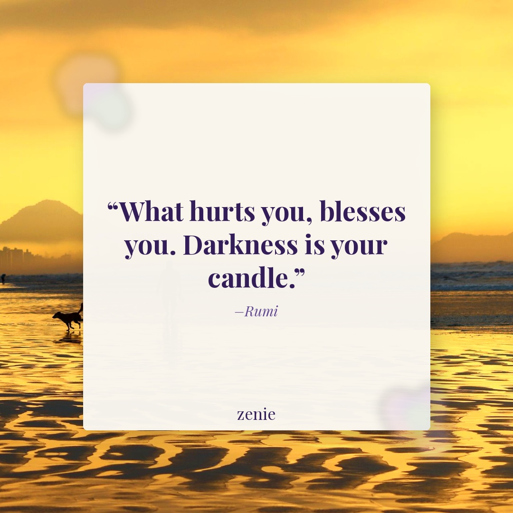
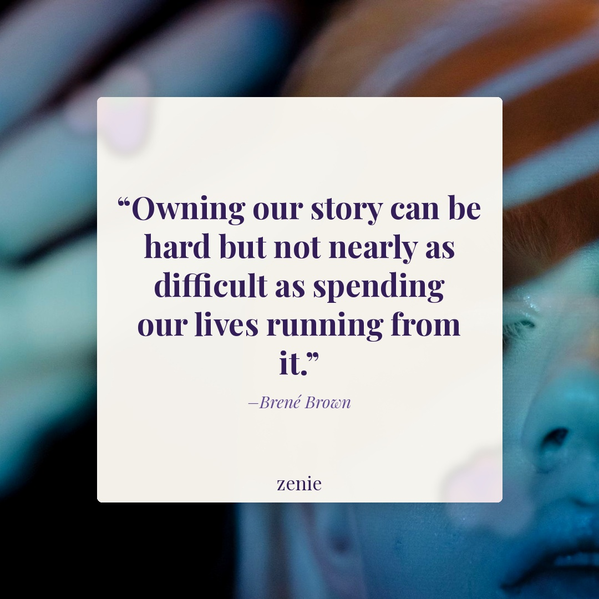

Meme 1
The apps will drain you. The journal will not. 📓 Tonight's prompt: what's one thing you keep looking for outside yourself that journaling helps you find on your own?
Best time: Monday 7–9 PM PST
The apps will drain you. The journal will not. 📓 Tonight's prompt: what's one thing you keep looking for outside yourself that journaling helps you find on your own?
Best time: Monday 7–9 PM PST

⏳ Image rendered by GitHub Action (regenerate_quotes.py)
“What hurts you, blesses you. Darkness is your candle.” — Rumi
FB: The journal doesn't ask you to be okay yet. It asks you to be honest. ✨ Tonight's prompt: what's something painful that — looking back — turned out to be exactly what you needed? Save this one for when you need the reminder.
🧪 Short Rumi quote (9 words) with a single pain-as-blessing prompt, testing whether a shorter poetic line lands faster than the longer quotes we've run — the brevity + the darkness-as-candle angle should resonate in the reflective autumn shift.
Best time: Tuesday 6–8 PM PST
Creator: unknown ⚠️ UNVERIFIED — confirm creator against the reel before posting
IG: Credit: @unknown ⚠️ UNVERIFIED — confirm creator against the reel before posting Spending time with yourself is a skill — and journaling is how you practice it. 📓 Tonight's prompt: what does 'being with yourself' actually feel like right now — comfortable, strange, or both?
FB: Credit: ⚠️ creator unverified — confirm before posting Spending time alone with yourself is a skill most of us were never taught. Journaling is how you build it. 💜 Tonight's prompt: what does 'being with yourself' actually feel like right now — comfortable, strange, or both? Share your honest answer below 👇
🧪 Reposting solo-journaling-time content because solo self-reflection posts historically drive saves on IG (the format rewards personal resonance); pairing with a 'being with yourself' prompt targeting the autumn solitude wave that peaks in September.
Watch ReelBest time: Wednesday 7–9 PM PST
No judgment. Full support. That's the journal. 💜 Tonight's prompt: what's the thing you've been too embarrassed to write down — and what would it feel like to finally put it on paper?
Best time: Thursday 7–9 PM PST

⏳ Image rendered by GitHub Action (regenerate_quotes.py)
“Owning our story can be hard but not nearly as difficult as spending our lives running from it.” — Brené Brown
FB: Running from the story takes more energy than telling it. Your journal is the place where you stop running. 💜 Tonight's prompt: what's a story you've been telling yourself — about yourself — that you've never actually questioned? Write it out, then ask: is it true? Save this if it landed.
🧪 Brené Brown quote on story-ownership paired with a self-narrative prompt, testing whether a well-known contemporary voice earns more FB comments than the classic poets — the 'is it true?' follow-up question creates a second layer of engagement.
Best time: Friday 6–8 PM PST
Creator: unknown ⚠️ UNVERIFIED — confirm creator against the reel before posting
IG: Credit: @unknown ⚠️ UNVERIFIED — confirm creator against the reel before posting Journaling doesn't just change how you know yourself — it changes how you show up in every relationship you have. 💜 Tonight's prompt: what's one pattern you keep noticing in your relationships that you haven't yet admitted is yours to work on?
FB: Credit: ⚠️ creator unverified — confirm before posting We talk a lot about communication in relationships. But the honest conversation nobody mentions? The one you have with yourself first — in your journal. 🌸 Tonight's prompt: what's one pattern you keep noticing in your relationships that you haven't yet admitted is yours to work on? Share below 👇
🧪 Reposting a 'journaling changed my relationship' reel because relationship-angle journaling content historically outperforms pure self-reflection in FB shares — pairing with a pattern-recognition prompt tests whether naming your own role in a pattern drives more comments than the typical 'something happened to me' frame.
Watch ReelBest time: Saturday 11 AM–1 PM PST